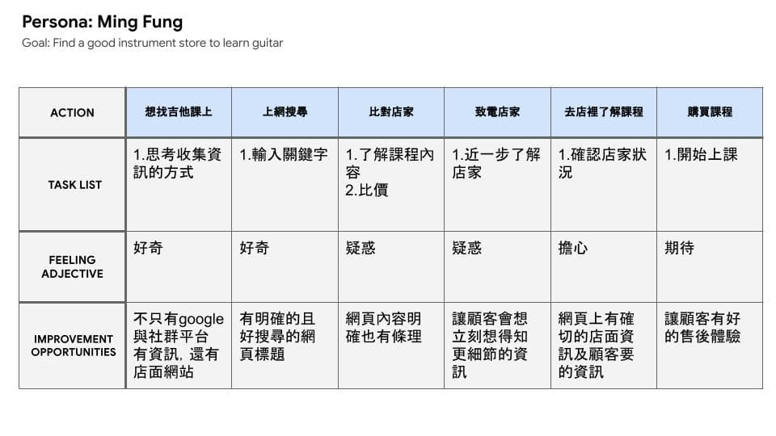
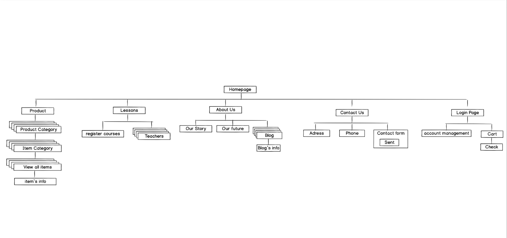
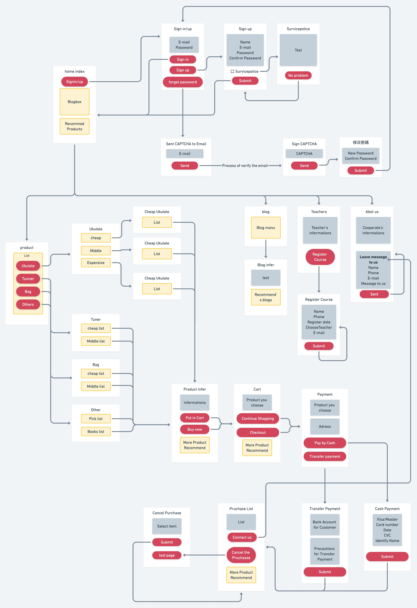
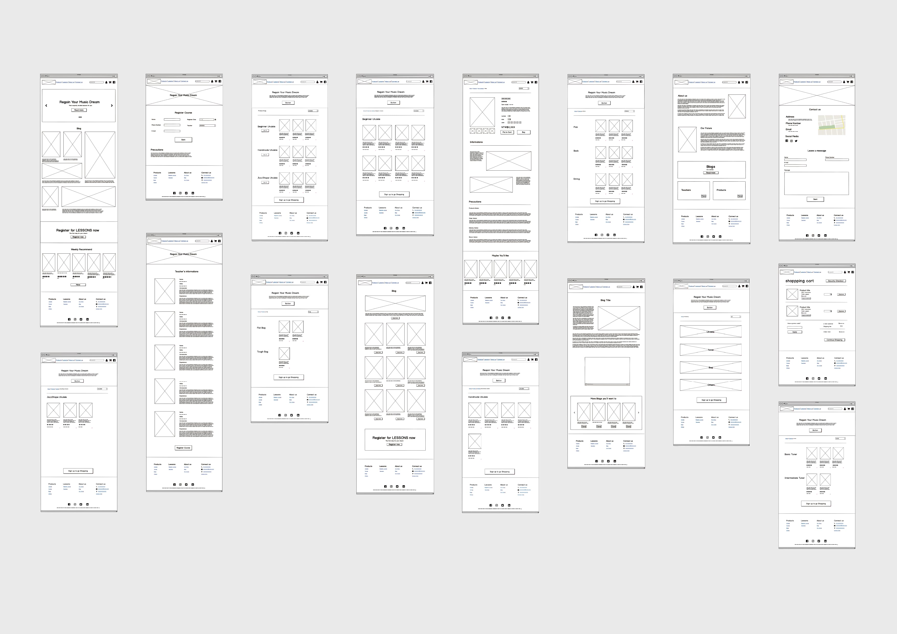

Role
UI/UX Desinger
Tools
Miro for FlowChart
Miro for Wireframe
Illusturator
PhotoShop
Adobe Xd
Duration
10/2020
Concept
官方網站上能讓客人認識這間店，而且網站內有各式不同功能，有部落格、教師資訊甚至還有網路商店。
Ideate
樂器行的實體店面結束後，我便開始執行這個網路商店，而身為一位UIUX設計師，也就理所當然地自行打造網站。 在製作時我列下了原先在店裡的優勢，並嘗試讓能讓那些客人喜歡的部分繼續延續，發現到部落格是個很好繼續延續人與人之間訊息的好方式。
Persona
User Journey Map
Guideline
FlowChart
WireFrame
Design
Design
在網路商店，最重要的一點是能讓客戶能迅速且精準地找到他們要的產品，因此做了個是很明確的產品分類讓可人去挑選。
而另一個網頁上的重點是報名課程，我幾乎放在每一頁都設置一張Banner，讓客人能容易的導入了解課程或老師資訊上。
Color
Interaction
使用者能輕易且不壓迫得方式在每頁找到不同功能的連結，不論是用Banner或是用Maybe you will like的版面讓客戶隨時跳到自己想要看的頁面。